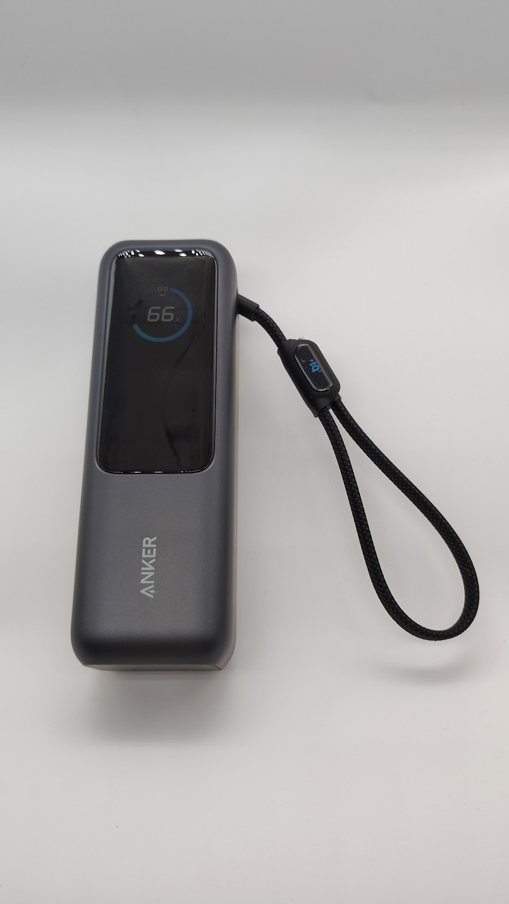
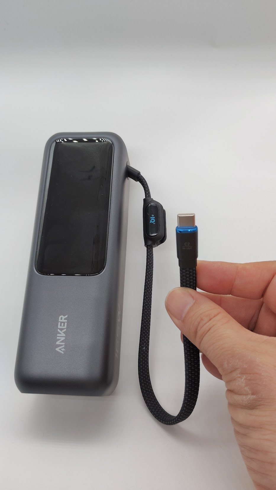

こんにちは、ろぶーです。
私はこれまで、用途に合わせてAnkerのモバイルバッテリーを使い分けてきました。今回購入したもので、たぶん7台目です。
その中でも、最近買った「Anker Power Bank（25000mAh, Built-In & 巻取り式USB-Cケーブル）」は、とても気に入っています。
残量が見えるディスプレイ、2本の内蔵USB-Cケーブル、ノートPCにも使える大容量。便利な点が多い一方で、約595gあるため、かばんに入れると重さはきちんと感じます。
この記事では、メーカーの数字だけではなく、実際にスマートフォンを充電して感じたことや、飛行機へ持ち込む前に勘違いしたことも含めて紹介します。
広告：この記事にはアフィリエイトリンクが含まれます。リンク経由の購入により、当サイトが報酬を受け取る場合があります。Amazonのアソシエイトとして、ろぶーの気になる事は適格販売により収入を得ています。
残量や出力が見えるディスプレイ
まず便利なのが、本体上部のディスプレイです。
バッテリー残量だけでなく、充電中の出力や、本体を充電するときの入力状況も確認できます。「あとどれくらい使えそうか」が数字で見えるので、外出先での安心感があります。

ケーブルが2本あるから、別に持ち歩かなくていい
USB-Cケーブルは、巻き取り式と一体型の2本が本体に付いています。
巻き取り式は必要な長さだけ引き出して使えます。もう1本の一体型ケーブルは、ストラップのような形になっています。さらにUSB-CポートとUSB-Aポートもあり、最大4台を同時に充電できます。
ケーブルを忘れにくく、かばんの中で別のケーブルを探さなくてよい。日常では、この小さな便利さがかなり効きます。

メーカーはストラップとしても使えると案内していますが、私は本体の重さもあるので、持ち運ぶときは本体そのものを持つようにしています。軽く引っかける程度には便利です。
25000mAhで、スマホにもノートPCにも使える
容量は25000mAh。USB-Cは単ポート最大100W、合計では最大165W出力に対応しています。
スマートフォンだけでなく、USB-C充電に対応したノートPCにも使えるのが、この製品を選んだ大きな理由です。外出や出張で、スマホ用とPC用のモバイルバッテリーを分けずに済みます。
公式ページでは、iPhone 17を約4回充電できると案内されています。ただし、実際の回数は端末の電池容量や充電中の使用状況などで変わります。
私のFCNT arrows F-51Eで試したところ、スマホの残量を3％から87％まで回復させるのに、このモバイルバッテリーを34％ほど使いました。単純計算では、私の使い方ではフル充電3回前後という感覚です。
メーカー公表値と違って見えますが、比較対象のスマートフォンが違うため、矛盾ではありません。自分の端末で何回充電できるかは、実際に使って確かめるのが確実だと思います。
小さくまとまる。ただし、軽くはない
本体は約158 × 54 × 49mm。25000mAhの製品としては細長く、意外と小さくまとまっています。
ただし、重さは約595gです。手に持ったときより、かばんへ入れたときのほうが重さを感じます。毎日の近所への外出より、長時間の外出、出張、旅行、ノートPCを持ち歩く日に向いていると思います。
飛行機では「165W」と「Wh」を混同しない
購入した当初、製品にある「165W」という表示を見て、飛行機の持ち込み制限を超えているのではないかと勘違いしました。
しかし、165Wは充電時の合計最大出力を表す数字です。航空会社がモバイルバッテリーの持ち込み判断に使うのは、一般にバッテリーのエネルギー量を示すWhです。単位も意味も異なります。
私はJALとベトナム航空を利用する際に確認して持ち込みました。両社の案内ではモバイルバッテリーは預け入れではなく機内持ち込みが必要です。容量や個数などの条件は変更される場合があるため、旅行前には利用する航空会社の最新ルールを確認してください。
主な仕様
| 製品名 | Anker Power Bank（25000mAh, Built-In & 巻取り式USB-Cケーブル） |
|---|---|
| 製品型番 | A1695N11（ブラック）／A1695N41（シルバー） |
| 容量 | 25000mAh |
| サイズ | 約158 × 54 × 49mm |
| 重さ | 約595g |
| USB-C出力 | 単ポート最大100W |
| USB-A出力 | 最大33W |
| 合計最大出力 | 165W |
| 接続口 | USB-Cケーブル2本、USB-Cポート1つ、USB-Aポート1つ |
| 同時充電 | 最大4台 |
| 保証 | 18か月＋Anker会員登録後6か月延長 |
ろぶーの結論
25000mAhの大容量と最大165W出力だけを見ると、かなり本格的なモバイルバッテリーです。でも、私が気に入った理由は、もっと日常的なところにあります。
残量が見える。ケーブルを別に持たなくていい。スマホとノートPCの両方に使える。最大4台を同時に充電できる。この使いやすさが一つの本体にまとまっているのがいいんです。
約595gなので、軽さを優先する人には向きません。私も毎日必ず持ち歩くというより、長時間の外出や旅行、PCを持つ日に選びます。
用途に合わせて使い分ける私にとって、この製品は「容量と便利さを優先する日」の頼れる1台になりました。
セールと購入先を確認する
Anker Japan公式オンラインストアでは、2026年9月30日17時まで、31％OFFクーポンの案内が表示されています。価格、在庫、クーポンの適用条件は変わる場合があるため、購入画面で最終金額をご確認ください。
上記2リンクはアフィリエイトリンクです。Amazonでは、購入前に販売元・発送元・色・配送予定日もご確認ください。
公式出典・参考情報
仕様、セール表示、航空会社の案内は2026年9月26日に確認しました。購入条件や運航上のルールは変わる可能性があるため、各公式ページの最新表示を優先してください。